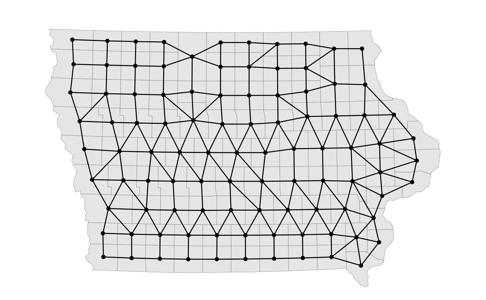

library(redist)
data(iowa)
iowa_map <- redist_map(iowa, existing_plan = cd_2010, total_pop = pop)Definition: An adjacency list that is represented by a
list with one entry for each redistricting unit in a map,
where each entry is an integer vector of adjacent
units.
Deprecated alternative arguments: adjacency,
adj.list, adj.obj,
adjlist
Example:
# Standard eval -
adj <- redist.adjacency(shp = iowa)
# tidy eval -
adj <- get_adj(iowa_map)
head(adj)
#> [[1]]
#> [1] 1 14 38 60 87
#>
#> [[2]]
#> [1] 0 14 68 86 87
#>
#> [[3]]
#> [1] 21 95
#>
#> [[4]]
#> [1] 25 67 92
#>
#> [[5]]
#> [1] 13 14 38 82
#>
#> [[6]]
#> [1] 6 9 47 56 85
# Plot it!
redist.plot.adj(shp = iowa_map)
Definition: The number of districts in a plan, a positive
integer
Deprecated alternative arguments: Ndistrict,
n_dists
Example:
# Standard eval -
ndists <- 4
# tidy eval - stored within redist_map object
attr(iowa_map, 'ndists')
#> [1] 4Definition: The number of simulations to run. This is a positive
integer.
Deprecated alternative arguments: nsamp
Example:
nsims <- 100Definition: The maximum symmetric deviation from perfect
population parity allowed. This is a positive
numeric.
Deprecated alternative arguments: thresh,
popcons, pop_constraint
Example:
# standard eval -
pop_tol <- 0.01
# tidy eval - stored within redist_map object
# - getting
get_pop_tol(iowa_map)
#> [1] 5.350657e-05
# - setting
iowa_map <- set_pop_tol(iowa_map, pop_tol = 0.01)Definition: A one-dimensional array of district assignments with
one for each redistricting unit, typically numbered
1:ndists, though sometimes
0:(ndists - 1)
Deprecated alternative arguments:
district_membership
Example:
sim <- redist.rsg(adj = adj, total_pop = iowa$pop, ndists = 4, pop_tol = 0.01)
#>
#> ====================
#> redist.rsg(): Automated Redistricting Starts
#>
#>
#> 4 districts built using 99 precincts in 0.09 seconds...
head(sim$plan)
#> [1] 3 3 4 3 3 1Definition: A two-dimensional array of district assignments,
where each column is a plan.
Deprecated alternative arguments: partitions,
district_membership, districts,
cdvec
Example:
sims <- redist_smc(map = iowa_map, nsims = 10, silent = TRUE)
plans <- get_plans_matrix(sims)Definition: The initial plan to start a Markov Chain Monte Carlo chain from. An integer vector with one entry for each redistricting unit.
Deprecated alternative arguments: initcds
Example:
# standard eval -
init_plan <- iowa$cd_2010
# tidy eval - stored within redist_map object
get_existing(iowa_map)
#> [1] 3 3 1 2 4 1 1 4 1 1 4 4 4 4 3 2 4 4 4 2 4 1 2 4 3 2 2 1 2 4 1 4 1 4 4 3 4 4
#> [39] 3 4 4 4 4 2 1 4 4 1 1 2 2 2 1 2 4 2 1 2 2 4 3 2 2 1 3 1 4 2 3 2 4 4 3 4 4 4
#> [77] 3 3 1 3 4 2 4 4 4 1 3 3 2 2 3 2 2 4 4 1 4 1 4Definition: A vector of non-negative integer entries
with one per redistricting unit. The entries should reflect the total
population within each unit.
Deprecated alternative arguments: pop,
population, popvec, fullpop,
fullpopvec
Example:
# standard eval
total_pop <- iowa$pop
# tidy eval - a column within the redist_map object tracked by attributes
iowa_map[[attr(iowa_map, 'pop_col')]]
#> [1] 7682 4029 14330 12887 6119 26076 131090 26306 24276 20958
#> [11] 20260 14867 9670 20816 13956 18499 44151 12072 12439 9286
#> [21] 16667 18129 49116 17096 66135 8753 8457 17764 40325 16667
#> [31] 93653 10302 20880 16303 10680 7441 9336 12453 10954 15673
#> [41] 11341 17534 14928 20145 9566 9815 7089 16355 19848 36842
#> [51] 16843 130882 20638 10511 15543 35862 211226 11387 8898 11581
#> [61] 15679 22381 33309 40648 15059 10776 9243 7970 10740 42745
#> [71] 14398 6462 15932 9421 24986 7310 430640 93158 18914 5131
#> [81] 10350 165224 12167 33704 89542 17767 6317 12534 7570 35625
#> [91] 46225 21704 6403 38013 10866 21056 102172 7598 13229Definition: A vector of non-negative integer entries
with one per redistricting unit. The entries should reflect a subgroup
population of interest within each unit.
Deprecated alternative arguments: group_pop,
grouppop, grouppopvec
Example:
iowa$white
#> [1] 7507 3922 13325 12470 6007 25387 109968 25194 23459 20344
#> [11] 13756 14552 9470 20119 13502 17897 40876 11553 12048 8208
#> [21] 15843 17563 45454 12541 58630 8556 7946 17408 36059 16255
#> [31] 86981 9319 19987 15443 9334 7123 9017 12190 10595 14344
#> [41] 10744 16430 14532 18141 9314 9288 6907 15818 19223 35284
#> [51] 14539 108767 19716 10286 15121 32833 188592 9309 8720 11267
#> [61] 15233 21242 31834 31807 14390 10564 8904 7677 10265 34518
#> [71] 13605 5937 14767 9108 23782 7043 347710 83609 17705 4966
#> [81] 10031 136884 11763 30090 77812 14874 5872 12029 7373 31157
#> [91] 44266 20114 6244 34210 10247 20153 79282 7335 11738Definition: A three entry vector for asymmetric population parity control. The first entry is the lower bound for population, the second is the target population, and the third is the upper bound for population.
Example:
# tidy eval - stored in redist_map object
attr(iowa_map, 'pop_bounds')
#> [1] 753972.9 761588.8 769204.6